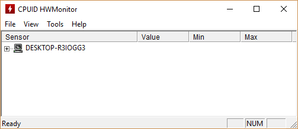
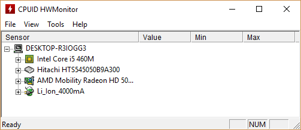
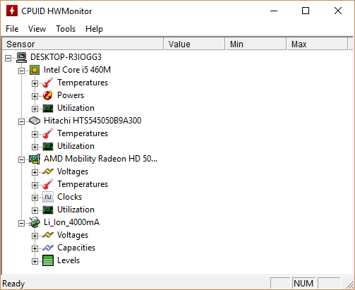
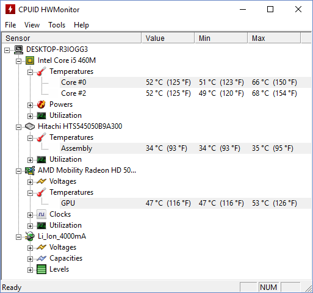
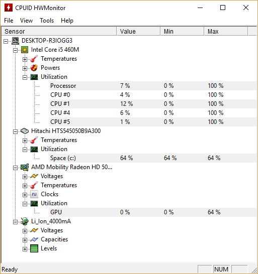
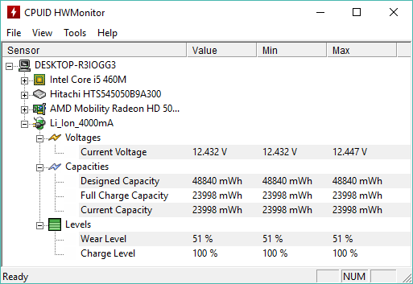
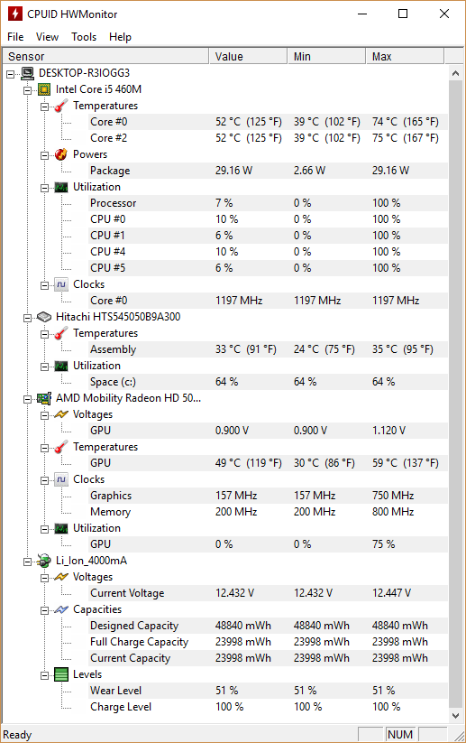
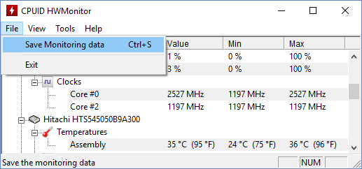
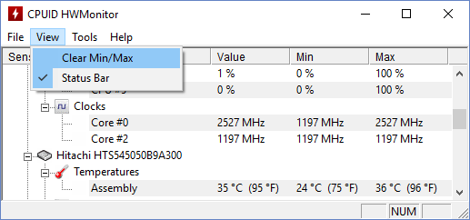

HWMonitor Portable 1.32HWMonitor – это программа для мониторинга показателей различных компонентов компьютера. Сюда относится температура, скорость вращения вентиляторов, а также напряжение на различных устройствах. HWMonitor поддерживает мониторинг наиболее распространенных чипов: серии ITE IT87, Winbond ICs и другие. Кроме того, программа умеет считывать информацию с процессорных датчиков, сенсоров блоков питания abit uGuru и Gigabyte ODIN, показывает температуру жесткого диска через S.M.A.R.T и температуру видеокарт на базе GPU производства ATI и nVIDIA. После установки и запуска программы открывается главное окно  После нажатия на «+» мы увидим все компоненты компьютера, по которым мы можем узнать какие-либо показатели. На следующем скриншоте можно увидеть, что доступна информация процессора, жесткого диска, видеокарты и аккумулятора.  После открытия доступных пунктов можно увидеть все показатели, которые доступны по каждому конкретному устройству. Их можно видеть на следующем скриншоте.  Далее более подробно рассмотрим температуру комплектующих компьютера  Как видно на скриншоте выше на данный момент два ядра процессора имеют одинаковую температуру равную 52 градусам по Цельсию. Но их максимальная температура различна, как и минимальная за учетный период. Жесткий диск имеет температуру, которая почти не менялась в течении времени и равнялась 34 градусам. Видеокарта на данный момент имеет минимальную температуры за время учета равную 47 градусам, а максимальной была температура 53 градуса. На следующем скриншоте рассмотрим процент использования конкретного оборудования.  Как видно выше, процессор в целом нагружен на 7 %, а т.к. процессор работает в четыре потока информация доступна о каждом отдельно. Например, первый нагружен на 4%, второй на 12%, третий на 6%, а четвертый всего на 1%. Жесткий диск нагружен на 64% в целом постоянно. Видеокарта на данный момент вообще не нагружена. Для ноутбуков очень полезной будет информация о состоянии батареи. Она выглядит следующим образом:  Тут можно узнать, как вольтаж батареи, так и её ёмкость. И наиболее интересная информация – это процент износа батареи. Программа на данном ноутбуке показывает, что батарея израсходована примерно на 50%. CPUID Hardware Monitor в целом предоставляет следующую информацию  Особенности установки:
Особенности программы HWMonitor имеет официальный сайт, скачать программу на нём можно бесплатно. Находится сайт по адресу www.cpuid.com. Программа собирает информацию со всех датчиков, находящихся в компьютере и выводит её на экран в одном окне. Программа отображает всю информацию в реальном времени и постоянно её обновляет. Вся информация в окне разбита по аппаратным устройствам компьютера материнская плата, процессор, жёсткий диск, видеокарта, батарея и так далее. Показывает программа CPUID температуру, напряжение, питание, частоты, загруженность, обороты вентилятора. Дополнительные функции Сохранение собранной информации в текстовом документе Собранные программой HWMonitor показатели можно сохранить в текстовом файле, для этого нужно нажать Файл (File) и выбрать Сохранить данные мониторинга (Save Monitoring data).  Очистка сохраненной статистики Можно обнулить минимальные и максимальные значения показателей для этого нужно нажать Вид и выбрать Очистить значения.  Вывод: данная программа очень удобна для диагностики и контроля состояния компонентов компьютера. Большим плюсом является бесплатность программы и наличие русского языка. НИУ МГСУ, 2018 Мещеряков Александр Геннадьевич ИЭУИС 4-1 |